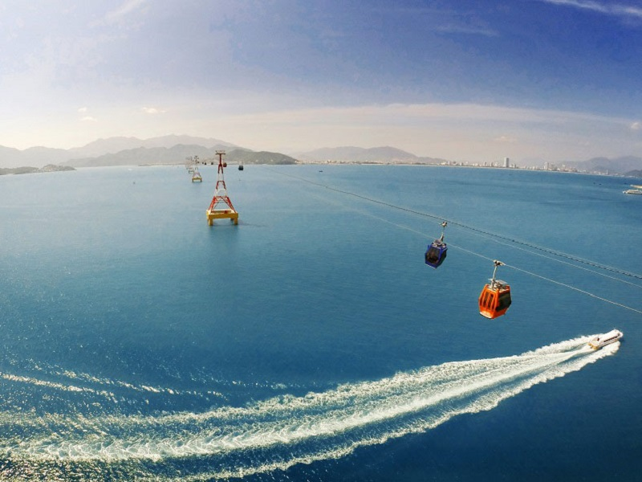
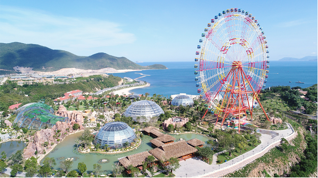
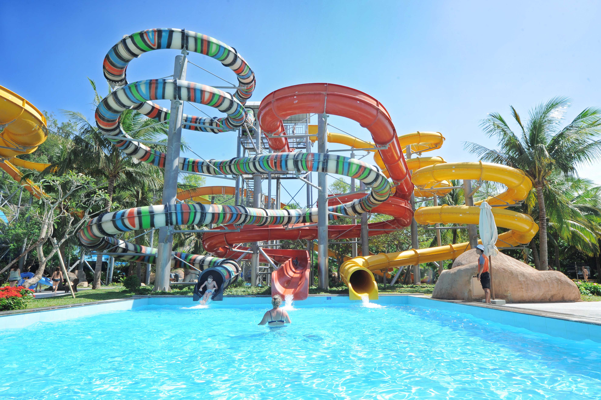
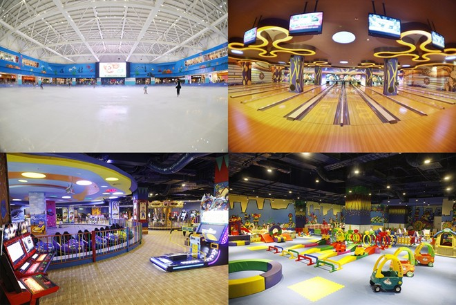
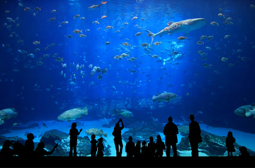
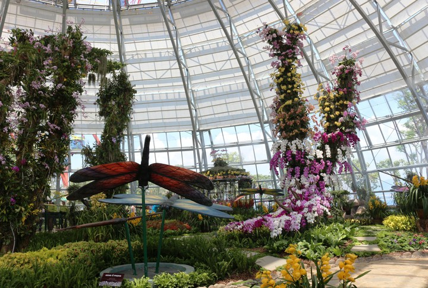
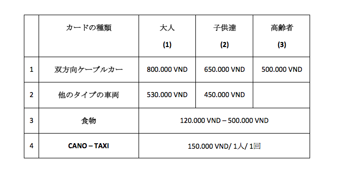

VinPearl Land ニャチャン
June 08, 2020
熱帯の楽園、「VinPearl Land」と呼ばれ、訪問者が自然に浸り、日光浴、風で遊んで、波で遊んで、海岸沿いの観光の細部を感じます。 「Nha Trang - Khanh Hoa」。
「VinPearl Land」に来ると、長さ3320 mの湾「Nha Trang」を横切るケーブルカーに乗って、「Nha Trang」と「Tre」島の 「Hon Ngoc Viet」を結ぶ必要があります。現代の交通手段は安全であるだけでなく、ケーブルカーも興味深いタイプの旅行です。 ケーブルカーの理想的な高さから、ズームインして海全体を見渡し、故郷の美しさに誇りを感じます。
遊び場所
    価格表
- フ(1) : 身長140cm以上の方。
- (2) : 身長100cm〜140cm未満の方。 100cm未満のお子様は無料です。
- (3) : 60歳以上の人。確認のため身分証明書を持参してください。
まとめ
観光「ニャチャン」は、ビーチの手付かずの美しさ、設備の整ったリゾート、 そして国際的なリゾートと同じくらい豪華であることにより、国内外の多くの観光客を魅了しています。
「Nha Trang」に行くと、昼と夜、断崖絶壁の隙間に海の音が響き渡り、活気と賑わいが混ざった海の味を 感じることができます。